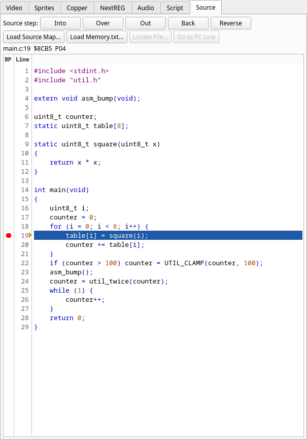

A first session¶
This page takes a small C program from source to a breakpoint on main.c:19,
steps through it and watches a variable change. It uses z88dk. Nothing here is
specific to z88dk except the build line; a program from sjasmplus gets the same
Source tab (see sjasmplus and Boriel ZX Basic).
The program¶
Four files. main.c fills a table with squares and adds them into counter;
util.c is a second C module; asmfn.asm is a routine in assembly, so you see
both languages in one session. They are the files in test/fixtures/z88dk/src/
of the JNEXT repository.
main.c:
#include <stdint.h>
#include "util.h"
extern void asm_bump(void);
uint8_t counter;
static uint8_t table[8];
static uint8_t square(uint8_t x)
{
return x * x;
}
int main(void)
{
uint8_t i;
counter = 0;
for (i = 0; i < 8; i++) {
table[i] = square(i);
counter += table[i];
}
if (counter > 100) counter = UTIL_CLAMP(counter, 100);
asm_bump();
counter = util_twice(counter);
while (1) {
counter++;
}
return 0;
}
util.h:
#ifndef UTIL_H
#define UTIL_H
#include <stdint.h>
#define UTIL_CLAMP(v, m) ((v) > (m) ? (m) : (v))
uint8_t util_twice(uint8_t v);
#ifdef __SDCC
static inline uint8_t util_inc(uint8_t v) { return v + 1; }
#else
#define util_inc(v) ((v) + 1)
#endif
#endif
util.c:
#include "util.h"
uint8_t util_twice(uint8_t v)
{
uint8_t r;
r = v + v;
r = util_inc(r);
return r;
}
asmfn.asm:
SECTION code_user
PUBLIC _asm_bump
EXTERN _counter
; void asm_bump(void): counter += 3
_asm_bump:
ld hl,_counter
ld a,(hl)
add a,3
ld (hl),a
.bump_done
ret
Build it¶
zcc +zxn -clib=new -debug -m --list -subtype=nex -create-app -o prog main.c util.c asmfn.asm
-debug -m is what makes the map carry C lines; --list writes the listings
that complete it; -create-app writes the loadable prog.nex. The build leaves
these beside each other, and they must stay together:
prog.nex prog.map prog_CODE.bin prog.lis main.c.lis util.c.lis asmfn.asm.lis
Why each is there, and the other ways to build, are in Building programs with z88dk. Keep the four source files where the compiler saw them: JNEXT looks for them beside the map, then in its parent directories (where the Source tab finds the files).
Load it¶
Start JNEXT with rewind switched on, so that Back works later:
jnext --machine next --rewind-buffer-size 200
(Rewind is off by default. The option also switches on the trace log that Back needs. Instead, you can enable Debug ▸ Rewind ▸ Enable Rewind in the debugger before loading: a load clears the recorded history but keeps the setting. See Backward execution.)
Open the debugger with Alt+D and pause the machine with Debug ▸ Pause /
Break (F9). Then choose File ▸ Load NEX File... in the emulator window
and pick prog.nex. A program loaded into a paused machine leaves it paused, at
the program's first instruction, which for z88dk is the start-up code and not
yet main.
JNEXT finds prog.map beside the program and says so in its log (the terminal
it was started from). With z88dk 2.4 the lines are:
Loaded 332 z88dk symbols from '/home/you/prog/prog.map'
Loaded 281 z88dk source lines from '/home/you/prog/prog.map' and 4 listings (program identity verified)
"Program identity verified" means prog_CODE.bin matches the bytes in memory:
the map belongs to this program. The counts are for z88dk 2.4; the 2026-10-16
master gives 333 symbols and the same 281 lines. If the line says program
identity not verified the map is still used; see
Limits and troubleshooting. (Started from the command line with
--load prog.nex, the path in the first line is the name you typed.)
Open the Source tab. The machine is at $8000, and the tab shows the file the
map names for that address: a start-up file from your z88dk installation,
crt_start_di.inc, with line 3 (di) highlighted. The position line above the
text reads like this (the path is that of your installation):
/home/you/z88dk/lib/config/../../libsrc/_DEVELOPMENT/target/zxn/../crt_start_di.inc:3 $8000 P04
That is z88dk's own start-up code, not yours; the map records its absolute path,
so the tab finds it on the machine that built the program. Parts of the start-up
code that come from an m4 template have no file on disk; for those the tab shows
the text from prog.lis, labelled (m4 output, from prog.lis).
Stop on a line¶
In the Breakpoints panel press Add, leave the type on Execute, and enter
main.c:19. It is accepted because the map has code for that line; a line with
no code is refused (no code at main.c:3, in red in the dialog). The panel lists
the breakpoint as main.c:19 at $8CB5 P04. Press F5: Continue.
The machine stops on table[i] = square(i);, the first time through the loop.
The Source tab shows main.c with line 19 highlighted, and a line above the
text names the position: main.c:19 $8CB5 P04, that is, file and line, the
address and the memory that supplies it (P04 is RAM page 0x04: banked code). Addresses are those of the z88dk 2.4
build; another build can place the code elsewhere, and the lines do not move.
The breakpoint also shows as a red dot in the gutter, left of the line number,
and a click on the dot clears it (a click on a line sets one). An amber arrow at the right
edge of the gutter marks the line the CPU is on.

Watch a variable¶
Right-click counter in the source (line 20, say) and choose Watch: it is added to the
Watches panel under its C name, counter (the compiler's _counter is hidden).
Break on Write from the same menu stops whenever the program writes it. See
In the Source tab.
Step¶
The five source steps are buttons at the top of the Source tab and in Debug ▸ Source. Into, Over and Out are also on Ctrl+F6, Ctrl+F7 and Ctrl+F8. Instructions that belong to no source line (the compiler's runtime, library code) are run through by every step.
This is the sequence you see with the z88dk 2.4 build, starting at the stop on
line 19 (counter is 0). The positions are shown above the text, as before.
- Over stops at
main.c:20 $8CBE. It did not runsquarefirst: 2.4's sccz80 lists the call tosquareunder line 20, so line 19 ends before it and line 20 starts with the call's setup. (This is the toolchain's line attribution, and it differs between z88dk versions; with the 2026-10-16 master, the call is listed under line 19 and Over from 19 runssquarebefore it stops at 20.) - Back returns to
main.c:19 $8CB5. It rewinds to the start of the previous source statement that ran. It needs rewind and the trace log: that is why JNEXT was started with--rewind-buffer-size. - Into stops at
main.c:20 $8CBEagain. Into again enterssquareand stops atmain.c:10 $8C78, the{of the function, where the-debugbuild's entry code runs. A third Into stops atmain.c:11 $8C7B,return x * x;. - Out leaves
squareand stops back inmain, atmain.c:20 $8CC9, in the middle of the statement that follows the call.
Run to a line¶
First clear the breakpoint on line 19 with a click on its red dot, or the run
stops there again at the next pass of the loop. Then right-click line 23,
asm_bump();, and choose Run to Here (or select the line and press
Enter). The machine runs the rest of the loop and stops at main.c:23 $8D0F.
No breakpoint is left behind. In the Watches panel counter is $64 (100d): the
loop added the squares 0 to 49, which is 140, and line 22 clamped it to 100.
Into now enters asm_bump and the Source tab switches to asmfn.asm, at
asmfn.asm:6 $8D65, shown in the same way, as assembly source. Out returns
to main at main.c:25 $8D12, with counter at $67 (103d): lines 24 and 25
start at the same address in this build, so the tab names the later one.
The rest of the program changes counter once more: util_twice doubles it and
adds 1 (207). The values at the start of lines 22, 23, 24 and 26, the first time
each is reached, are 140, 100, 103 and 207; a
script
(on execute main.c:26 once do log "${mem[@counter]:d}" end) prints them
without the GUI.
Where next¶
- All the ways to build, and what does not work: Building programs with z88dk.
- A source map is checked against the program and can be dropped by a reset: loading a source map.
- Something looks wrong: Limits and troubleshooting.